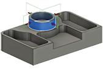

Coin du modèle
Coin du brut
En fonction du mode de palpage, vous pouvez sélectionner le modèle ou le brut.
Sélectionnez une seule face, des faces perpendiculaires ou des faces parallèles/opposées.
Les options de type de palpage varient en fonction de vos sélections.
|
|
Coin du modèle |
Coin du brut |
 |
 |
Bossage du modèle |
Bossage du brut |